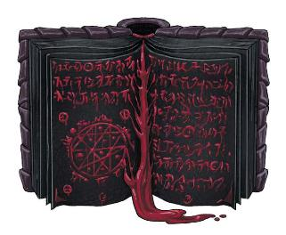

阴影是黑暗六神中的第一位。当奥林在西伯瑞斯的血液中描绘出魔力的文字时，他的影子也在凯博尔的血液中勾画出了印记。随着奥林获得了魔力，他内心的黑暗也获得了力量与智慧。阴影的低语引领嘲弄走上了黑暗的道路，激起了吞噬的愤怒。阴影的礼物赋予了鸟妖harpy引诱无辜者走向灭亡的声音，同时也赋予了美杜莎medusa致命的凝视。因为阴影是怪物的制造者，它可以让我们中的任何人变成怪物，引诱我们走上邪恶的道路。奥林和杜·哈拉向我们展示了通往更美好的道路，而阴影则敦促我们向自己的黑暗屈服。是否要走在光明之中，行在更高的道路之上，这都取决于你。
——哈拉斯·莫兰 Halas Molan，沃奥特的大祭司
多吃蔬菜。穿过街道前要向两边看。别学那个法术，它很危险！奥林、国王、法官、老师……这个世界上到处都是告诉你该做什么的人，那些想要把他们的法律强加于你生活的人。他们说阴影在敦促你去做邪恶之事，可谁来决定什么是邪恶呢？阴影希望你能充分发挥你的潜能，过上最好的生活——而不是受下等人和他们的法律的约束。如果这让你成了他们眼中的“怪物”，那就随他去吧。
——来自萨恩的撒拉娜 Thalanna
（译注：在3版官方扩展《萨恩：万塔之城》中，撒拉娜（Thalanna）领导着一座位于中层孟西斯区的永明区的阴影神殿，人类女性，阵营：混乱邪恶，拥有牧师3/法师3（专精死灵系）的职业等级。
前朝翻译复制：
阴影神社:隐藏在黑暗的小巷里，阴影神社代表着永明区的黑暗面。在这里，死灵法师和其他邪恶法师们秘密地聚集在一起，以崇拜扭曲的魔法力量，达到邪恶的目的，由一个叫撒拉娜的牧师/亡灵法师Thalanna(混乱邪恶，女性人类，牧师3/死灵师3)领导。他们的存在纯粹是为了崇拜他们的神明，而躲藏只是为了躲避迫害。）
《探秘艾伯伦》中描述道:“阴影与奥林之间的战争在我们所有人心中激烈进行着。奥林的声音告诉我们，团结会使我们变得更强大，为了共同的利益而受苦是值得的。阴影低声说，没有什么共同的利益，重要的是你需要什么和你能做什么。为什么你要为别人做出牺牲，而不是做对自己而言最优的事情？既然可以索取，为什么还要付出？”
在五国的派里尼传统中，阴影对世界上的邪恶负有广泛的责任。天命诸神们放逐并束缚了第一纪元的霸主，但阴影是奥林的一部分且它无法被摧毁；打个比方，这反映了每个人心中都有潜在的邪恶。但与所有黑暗六神一样，阴影也有着多面性：野心之神，诱惑者，秘密的守护者和怪物的制造者。
阴影是野心的源头，是敦促你实现更伟大之事的声音。有一点野心可能是件好事，但阴影永远不会满足。它体现了对成功的渴望，无论你自己或他人付出多少代价。那些敬畏阴影的人强调这是一种积极的特质；阴影会向你展示通往力量的道路，如何成为最好的自己。但你会走多远？如果这是晋升的唯一途径，你会谋杀你的老板吗？如果你可以很简单地用谎言毁掉他们的声誉呢？即使你知道你所施展的每一个法术都会让一个无辜的人失去一年的生命，你还会使用黑魔法吗？这就是野心如何成为通往诱惑的途径。
但是诱惑的目的是什么？为什么阴影要把你引入歧途，为什么它的追随者要关注你？根据派里尼信条（the Pyrinean Creed），杜鲁尔并不是存在的重点。大多数封臣相信，杜鲁尔是灵魂过渡到更高层次存在的地方：天命诸神的国度。一些人相信，这是一个基于每一位天命诸神的概念的，真正的死后世界：阿拉瓦依和巴力诺统治着一个完美的自然国度，而奥林主持着一个由法院和图书馆组成的盛大的集会。另一些人则相信，封臣会成为与他们最相似的天命诸神的一部分——圣人的灵魂会与奥林合二为一。但被阴影引入歧途的人会成为阴影的一部分。这可能意味着灵魂的解体，或者被永恒地困在无形的虚空之中；不管怎样，这都不会很有趣。当然，就像所有与天命诸神有关的事情一样，这没有绝对的证据……一个阴影的奉献者会告诉你，奥林的追随者只是利用这个故事来控制你。你会让恐惧阻碍你实现自己的抱负吗？
那些跟随阴影这一面的人通常称自己为导师（mentors），但其他人称他们为诱惑者（tempters），或阴影之舌（Shadowtongues）。诱惑者专门帮助别人找到一条通往力量的道路，同时总是把他们推向最黑暗的道路。虽然这与监守之爪有一些重叠，但两者之间存在明显的差异。监守之爪会谈判并达成一项有明确的条款和利益的交易：“你的旅店会兴旺发达，作为交换，你将在四十岁时死去，监守会带走你的灵魂。”相比之下，诱惑者不会做出具体的承诺，也不会向你索取任何回报——他们只是提供建议，帮助你找到如何解决你的问题，或者找到如何让你自己去实现目标。但在这个过程中，他们会敦促你走上越来越黑暗的道路，驱使你成为一个怪物。
一些诱惑者相信他们的力量是来自阴影的礼物，并且阴影向他们低语，告诉他们去腐蚀谁。其他诱惑者相信阴影会奖励他们的工作，但他们与阴影或者不朽的使者之间没有直接的互动。
奥林是知识之神，他用科学（奥术或者其他东西）来建立一个更美好的世界。作为奥林的黑暗面，阴影也是知识之神……特别是你不应该知道的知识。阴影知道潜伏在凡人心中的邪恶。它知道是谁杀了你的父母。它知道你的爱人对你的真实想法。它知道奥林不会分享的魔法的秘密——可以提供力量，但要付出代价的技术。这种渴望是吸引一名封臣去呼唤阴影的主要原因之一：渴望获得他们知道自己不应该寻求的知识。
在处理一名阴影的祭司（NPC或玩家角色）时，要考虑到他们可能拥有不是以法术位或职业能力衡量的天赋。一名阴影的祭司可能会定期收到关于他们周围的人或世界的启示。但与卜筮术augury或通神术commune不同的是，祭司不会要求获得这些知识，也无法控制这些知识。有时候这些知识是有用的，但同样常见的是，它会揭示一些你实际上不想知道的事情——如果你分享这些事情，就会伤害到别人。与阴影有这种联系的人往往最终成为地下犯罪组织的调解人；你愿意为他们所要求的知识付出代价吗？
作为DM，你可以使用来自阴影的启示（也许是在梦中或幻象中）在战役中引入禁忌天赋。本章末尾的“角色选项”部分包含一个赋予禁忌超魔选项的专长；虽然玩家可能会选择这些作为角色标准职业发展的一部分，但你也可以将这些好处作为“超自然赠礼”给予他们（在《城主指南》第7章中讨论过）。或者，阴影可能会给予角色一个或多个额外的法术（可能来自本章的“六神的法术（Spells of the Six）”部分）。它甚至可以让施法者增强他们所知道的任何法术的力量（就像使用更高级别的法术位施法一样），每长休息一次……但每次使用这些力量都要付出代价。“可选规则：禁忌魔法的代价”边栏展示了这些禁忌天赋如何以黑暗和恐怖的方式影响你的游戏——如果你和你的玩家都同意这是一个你想要共同探索的故事。
可选规则：禁忌魔法的代价 Optional Rule: Forbidden Magic Costs
正如《探秘艾伯伦》的边栏所建议的那样，DM可以在游戏中引入阴影的魔法天赋。阴影知道那些黑暗、强大、代价高昂的秘密——那些好人不应该知道或使用的秘密。虽然游戏规则并没有设计不应该施放的禁忌魔法，但你可以在游戏中添加禁忌魔法，并且伴随它的，是一项可怕的代价。 本章最后呈现的角色选项并没有包含太多惩罚；然而，选择它们（或将其作为超自然赠礼接受）的玩家可能会对额外的负面影响感兴趣，并探索“有代价的禁忌魔法”的故事。不管你设立了什么样的效果，它们都应该明确而具体地说明为什么这个魔法是被禁止的——当它每次被使用时，有些人或有些东西就要付出代价。考虑以下想法： l 当你施展该法术时，投掷1d4。你会永久失去那么多生命值。 l 当你施展该法术时，投掷1d6。DM选择你或你的一个盟友，要么将该结果作为 黯蚀伤害，要么将其作为惩罚应用于该生物的下一次豁免中。 l 当你施放该法术时，一个无辜的生物会死亡。你无法控制谁会受难，也可能永远不会知道谁死了。 l 当你施放该法术时，植物会枯萎，并且你周围15英尺内的所有生物都会受到1点黯蚀伤害。 l 当你施放该法术时，投掷1d4。点数为1时，一个敌对的幽影（或另一个具有无定形（Amorphous）或虚体移动（虚体移动）特性的像幽影的不死生物）将现身并攻击你和你的朋友。 l 当你施放该法术时，选择一个视线范围内的盟友。玩家可以向你透露一个关于他们角色的可怕秘密，这个秘密会比他们之前透露的任何秘密都要糟糕；如果他们做不到或选择不这样做，该法术就会失效（注意，这是玩家的选择，而不是角色的选择；如果角色意识到阴影已经将他们的秘密分享了出去，那就取决于DM了）。 这些想法对于玩家角色来说都是合理的；与此同时，一个使用阴影的秘密的NPC可能会让他们的法术产生更戏剧性的效果或代价。所有这些都表明，当人们说“这是任何人都不应该使用的力量”时，这不仅是在说奥林是个混蛋——这些力量真的很危险。 |
通过诱惑，阴影可以把任何人变成怪物——但阴影也因向世界释放怪物而臭名昭著。虽然“怪物”的定义因文化而异，但当恶意的魔法扭曲自然时，阴影的影响就会显现出来；因此，“怪物”通常包括大多数异怪和怪兽，以及被所讨论的文化视为邪恶的巨人和类人生物。在神话中，是阴影将邪恶的类人生物带走，并把他们变成了鸟妖、美杜莎、鬼婆等等。许多神话详细地描述了这些可怕的起源故事。然而，这些不仅仅是神话，它们在很多情况下都是可证错误的；某些生物被认为是特定的霸主或异变魔的造物。但想要证明一种生物的祖先起源并不总是可能的；许多学者断言，异变魔奥拉斯克（Orlaask）创造了美杜莎，而美杜莎们自己则将他们的力量归因于阴影。
重要的是要认识到，这种“怪物”的观点反映了派里尼信条中随意的偏见——这是一个由恐惧驱动的轻蔑的标签。在艾伯伦，美杜莎，鸟妖，巨魔和其他类似的“骇人”的生物并不比任何人类更邪恶，或更不邪恶。事实上，卡扎克信仰断言，人类因缺乏他们所谓的怪物身上的奇异的超自然赠礼而受难。即使在五国内部，萨拉释克家族和龙之咆哮（the Dragonne’s Roar，译注：这是萨拉释克家族内部的一个负责怪物雇佣兵和劳工的组织）的工作也让更多的人每天都接触到，那些他们被教导将其视作怪物的生物，更多的人正意识到这是一个错误且封闭的标签。
以上各章节侧重于五国内部对阴影的共同看法。然而，卡扎克传统对阴影的看法与派里尼信条不同，最明显的就是去掉了了诱惑者的形象。在卓姆中，被称为“阴影之声”的阴影的祭司断言，知识就是力量，人们应该追求自己的抱负，知识不应该受到限制。但是他们对阴影引诱人们做坏事的看法嗤之以鼻；这是一个被法律和道德准则束缚和蒙蔽的文明的产物，它害怕野心和本能。
正如本章开头的“卡扎克信仰”中所讨论的那样，长期以来，荒原（Barrens）的不同民族对九神和六神有着不同的解释。在卓姆统一后，卡扎克信仰基本上成为了国教。人们可以自由地崇敬任何他们想希望的神明，但阴影之声在其中扮演着精神领袖的角色。这些祭司通常是美杜莎或恶鬼（oni）；虽然这个职位并不局限于他们，但卡扎克美杜莎是卓姆里最虔诚的民族，同时，许多恶鬼相信，他们强大的天生能力证明他们受到了阴影的青睐。阴影是六神中的首位，除了其传统的魔法和知识领域（spheres）外，阴影通常被认为是骇人生物（monstrous
creatures）的向导和守护者。因此，阴影的美杜莎牧师可能拥有生命领域（domain），因为她认为阴影是给她的人民带来生命的使者。
一名阴影之声会尊敬所有的六神，并在适当的时候援引他们（译注：指六神）——尽管他们（译注：指阴影之声）也试图减轻一些次要信仰的极端行为。所以一名美杜莎女祭司可能会接近刚刚来到灰墙（Graywall）的，来自最后的挽歌（译注：Last Dirge，鸟妖飞航队之一，卓姆的军阀）的鸟妖，对她说：“我认可你对这首歌的忠诚。在灰墙这里，我们称她为“愤恨”；让我来教你如何尊敬她而不会让你丧命。”
识之三面是一个崇拜奥林、昂纳塔和阴影（该教派不知道它的其他名字）的教派。该教派是三面崇拜中最小、最隐秘的教派。他们的原则很简单：奥林是教导者，掌握着法律、历史、信条和所有影响社会的共享的信息。昂纳塔是建造者，他将知识用于具体的目的。阴影隐藏了那些必须被隐藏的东西，那些可能摧毁文明的秘密。识之三面的成员相信，所有的事情都应该被知晓——但有些秘密只有那些能够明智地运用这些领悟的人才能掌握。
与所有的三面崇拜一样，大多数信徒都相信他们受到了一位特定神明的祝福。那些与奥林有联系的人通常是教师、历史学家或抄写员；他们寻求记录并传播知识。昂纳塔的信徒将奥术知识应用到日常生活中，作为舞杖者、奇械师和法师。阴影的信徒是最稀罕的——而且很少见到。这些奉献者寻找着秘密，但也隐藏着它们；他们通常是档案管理员或图书馆员，在这些职位上，他们可以小心翼翼地埋葬或隐藏他们认为必须保密的知识。也就是说，信徒不会去冒重要的知识被永久丢失的风险；秘密可能被隐藏，但它们不会被摧毁。
当教派接近其中一个潜在的信徒时，冒险者可能会遇到识之三面——可能是一个拥有智者背景的人物，或者是一个开创新奥术技术的人。另一方面，冒险者们可能需要一些信息，而这些信息是识之三面已经决定其必须是被隐藏的；他们能揭穿藏在莫格雷夫书库中的阴谋吗？
对阴影的崇拜在达贡有着深厚的根基，但达贡对阴影的解释不同于卡扎克和派里尼传统。在达贡，阴影被视为所有在黑暗中繁荣之人——那些无惧于黑夜或无光隧道的生物和文化的守护神。达贡人对阴影的正式称呼为Marhu Nasaar，夜之皇帝。
这种信仰与卡扎克将阴影视为所谓怪物的守护神的观点大体一致，但大多数达贡人不会为扩展的神系而烦恼。除了把嘲弄尊为狡猾和胜利之主（the Lord of Cunning and Victory）之外，他们还把阴影视为一个可以在任何时间和空间被呼唤的神——尽管众所周知的，在太阳高照、天空晴朗的时候，阴影的祝福几乎没有分量。
阴影与霸主们 The Shadow and the Overlords
阴影与世界第一纪元最著名的两个霸主有着特定的重叠。苏·卡特什（Sul
Khatesh）也被称为秘密的守护者，据说是神秘知识和最好保持被隐藏状态的事物的源头。与此同时，贝尔·沙洛（Bel
Shalor）被称为火焰中的阴影（the Shadow in the Flame），专注于诱惑。 有些学者断言，阴影的神话实际上是基于巨龙冠军们（draconic
champions）和霸主们之间的影响——所以奥林学习魔法的故事实际上可能是基于巨龙乌雷洛纳斯特里奇（Ourelonastrix）和苏·卡特什之间的交易。这取决于DM来决定这些故事是否真实，但无论如何，苏·卡特什和贝尔·沙洛都是具体且非常真实的，可以扮演阴影的角色的实体……而那些相信他们正在与阴影打交道的邪术师或邪教很容易与这些大邪魔（archfiends）中的一个合作。 |
那么你可以怎样在战役中使用阴影呢？一个献身于阴影的反派到底想要什么？
在很多情况下，阴影的仆人可能是煽动者，而不是与主要的反派。诱惑者的驱使人行恶，又帮助他们的计谋。秘密守护者的祭司可以作为地下犯罪组织的一个普通的调解人，但也可以通过泄露秘密来制造麻烦。结合他们的黑魔法知识，这样的角色可以成为一群玩家角色有趣的友敌角色。考虑一下撒拉娜，她是一名在萨恩的阴影神殿里的人类女祭司。众所周知，她是一个可靠的地下信息来源，总是愿意分享她的知识……只要付出代价。但她也可能会主动接近冒险家，简单地告诉他们一些事情。他们知道伊利亚·波罗马（Ilya Boromar）今晚要暗杀赛丹·波罗马（Saidan
Boromar）*吗？他们知道他们最近被谋杀的朋友是被索拉·塔卡南（Thora Tarkanan）杀的吗？撒拉娜分享这些信息并不会获得什么个人利益，但她喜欢推动事态的发展。并且撒拉娜可以教导一个法师角色一些他们在阿卡尼克斯中学不到的东西——这些秘密很强大，但这个角色愿意为此付出代价吗？
*译注：
赛丹·波罗马（Saidan Boromar，中立邪恶，男性半身人，游荡者8级）是当代波罗马家族的族长。此处提到的伊利亚·波罗马（Ilya Boromar）与伊利拉·波罗马（Ilyra Boromar）仅相差一个字母，而伊利拉·波罗马（中立邪恶，女性半身人，游荡者3/专家3）是赛丹的大女儿，也是代表下层杜拉区的城市议员，是波罗马家族在议会中的个人代表。
值得思考的是，要刺杀赛丹·波罗马到底是伊利亚·波罗马，还是伊利拉·波罗马，还是这只是撒拉娜对冒险者的误导。
阴影教派也可以填补邪术师集会或地狱交易的经典角色……即人们通过进行恶意的行为而获得神秘的力量。这通常与野心有关（获得实现你最黑暗的欲望所需的力量）但它也可能由恐惧驱动的。邪术师集会的领袖可能会利用人们对哀悼（the Mourning）、难民甚至对怪物的恐惧。加入他们，他们会教你保护自己所需的魔法！正如在“阴影和霸主们”边栏中提到的，这样的邪教可能与砂主有联系，要么是苏·卡特什，要么是贝尔·沙洛。
另一种受阴影驱使的反派，是决心不计代价地揭开终极奥术力量的法师。这样的角色甚至可以有一个崇高的目标；例如，一个法师认为他们必须揭开哀悼（the Mourning）的力量，这样他们就可以防止它传播或被五国之一所利用。不管动机是什么，这个角色都会被他们的野心所吞噬，而不在乎他们在追求目标的过程中伤害了谁。也许他们需要在萨恩中间为玛伯尔开启一个显能区，以完成一个仪式或发现一个秘密——尽管他们知道这将破坏萨恩与西拉尼亚的联系，并摧毁那些高塔。无所谓，因为他们获得的知识将帮助他们拯救整个世界！
需要明确的是：这些例子都是极端的。有一些人向阴影祈祷，他们不是邪术师或者法师，他们不寻求诱惑他人或毁灭世界。阴影的终极原则是“没有东西是被禁止的”，所以你不应该让法律或社会的规定阻碍你的野心。你是否相信你会比你的老板做得更好，但如果你遵循这个制度，你需要花几十年的时间才能做到这一点？阴影告诉你，这个制度才是问题所在。
此外，阴影拥抱着那些被其他人称为“怪物”的人——你不必是邪恶的才会被它所吸引，你只是在寻找一个属于自己的地方。在嘲弄和监守可以成为被贪婪或暴力驱使的罪犯的守护神的同时，阴影则是任何觉得自己与博德雷和奥林分隔之人的守护神——也许他们还没有在他们的社区中找到一席之地，或者觉得法律的存在只是为了阻碍他们。在这一点上，阴影与旅者有一些重叠；旅者鼓励人们挑战制度并推动变革，而阴影则更多地是追求个人的野心。
漫长暗影 Long Shadows
《萨恩：万塔之城》（译注：前朝的扩展书）提到了艾伯伦的几个“假期”，包括从瓦勒特（12月）26日到28日的三个晚上的“漫长暗影”。据说在这段时间里，阴影的力量达到了顶峰；恶毒的魔法变得更强大，“怪物”可以自由行动（这包括那些天生的怪物和那些已经变成怪物的人）。由DM来决定这个迷信的真相。也许在这段时间里，对抗任何一种“黑魔法”的豁免都会获得劣势。也许那些怀着邪恶意图的人会得到超自然的好处，比如在一些掷骰中获得优势。也许有些神秘的仪式只能在这些夜晚中进行。无论如何，在这三个晚上，善良的人们倾向于呆在家里，蜷缩在火的旁边，而邪恶势力则会奋起并采取行动。 |
阴影可以与许多有趣的角色概念联系在一起：不惜一切代价追求知识的学者，被过去的一次交易改变、现在寻求救赎的角色，或者正在按照自己的意愿做好事，将阴影视为知识与自由之源的吟游诗人。本章末尾的“禁忌专长”和“禁忌超魔法”部分，为从阴影那里获得秘密知识的施法者提供了新的选择。这里有一些其他的想法可以考虑。
被野心所驱动Driven
by Ambition。一个游荡者可能是阴影的临时支持者，其声称法律是为别人服务的；或者，你可以在本章末尾使用黑暗请愿人子职创造一个更忠诚的游荡者。征服誓言圣武士可能愿意使用阴影的力量来实现他们的野心；这个想成为暴君的人相信阴影正在给予他们实现野心所需的力量……他们会改变主意吗？记住，阴影的圣武士和嘲弄的圣武士的区别在于是对力量的关注，而不是战争。嘲弄的圣武士为了战争而活，而阴影的圣武士只关心最终的结果。
怪物制造者Monster
Maker。阴影以创造怪物而闻名——所以那些寻求自己创造怪物的法师和邪术师可能会被它所吸引。邪术师的链之契约可以被重新定义为是角色创造了他们的魔宠。
秘密探索者Secret
Seeker。对于一个追求阴影的奥术秘密的角色来说，知识牧师和吟游诗人都是不错的选择。逸闻学院（吟游诗人）也是一个合理的选择；你的“语出惊人”能力可以反映出你私下里知道他们的弱点或另一个导致他们绊倒的秘密。
阴影尤其以教授那些善良的人们所回避的黑暗技巧而闻名。在一个简单的层面上，这使得阴影成为那些以牺牲获得神秘力量的邪术师的优秀宗主——以及那些希望使用这种力量来达到其恶意目的的人。因为这与“致命的力量”相关，因此实际上的“宗主”是灵活的（译注：这里指以阴影作为宗主时，邪术师的子职可以有多种选择）；邪魔宗主或者咒剑宗主都是可行的，并且正如上文所述，至高妖精邪术师可以反映出胁迫与欺骗的力量，而不是真的与妖精产生联系。就像艾伯伦的所有神一样，阴影并不会真的在邪术师的面前显现——但是邪术师可能会相信他们有一个与阴影直接联系的渠道；他们可能有一个邪恶的灵魂作为阴影的使者，也有可能他们实际上是在为霸主苏·卡特什工作。
诱惑者Tempter。诱惑者是典型的反派，他们为其他人的邪恶行为提供便利。但对于玩家角色来说，这是一条可能的道路，尽管是一条黑暗的道路。诱惑者强调选择与自由；他们可能擅长解决问题，帮助其他角色实现崇高的目标，但作为阴影的追随者，他们相信没有东西是被禁止的。这样的角色甚至可以在黑暗中寻找光明——希望找到一个抵制腐败的人。
一个老练的诱惑者角色需要知道通往力量的秘密途径，并具有说服别人跟随他们的魅力。作为这样一个诱惑者，你可以是一个渴望领域的牧师，在本章的结尾介绍；知识或诡术领域也是合理的选择。作为一个邪术师，你可以使用至高妖精宗主来体现你的一种欺骗他人与潜入阴影的天赋。阴影的吟游诗人很可能是低语学院。
另一种情况是，玩家角色可能会被之前遇到的一个诱惑者所困扰，这个诱惑者帮助他们获得了如今拥有的地位或力量。他们为了实现自己的野心而采取的行动是否永远玷污了这个角色？或者他们能找到救赎吗？
意想不到的礼物Unexpected
Gifts。幽影魔法术士是一个合乎逻辑的阴影的仆从；但也有可能这种能力是你无意中获得的。也许你的父母是阴影教徒，而你是一个可怕的仪式的产物——但你注定要被邪恶所吞噬吗，还是你可以用你的力量为光明服务？除此之外，任何法师都可以从阴影中获得意想不到的灵感。你过去从不精通死灵法术，但从一场梦中醒来后，你意识到你已经理解了它。